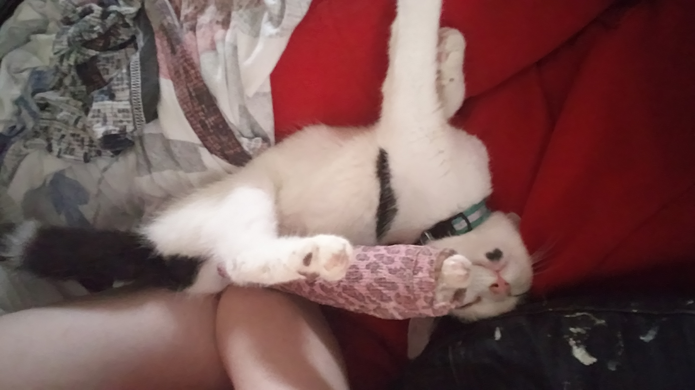
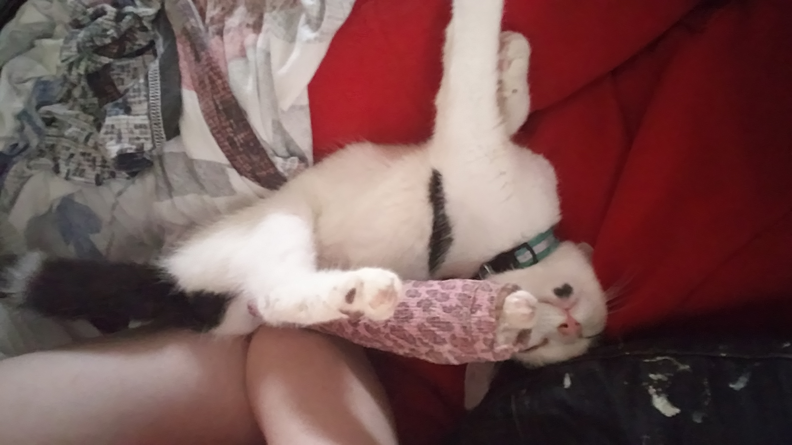

Schieve, le Wonder Cat miraculé
Il y a un an, une belle âme trouvait un jeune chaton mourant devant chez elle et lui sauva la vie en l'amenant chez des merveilleuses vétérinaires.
Quelques jours après, nous recevions un appel qui illuminera nos vies
Son arrivée chez nous s'est faites naturellement, et dès le début il nous a fait fondre avec sa fascination pour l'eau - qu'il a encore et toujours!
 

Il a eu droit à quantité de câlins, jouets et séances de "jeux-entraînements" pour récupérer un maximum de souplesse,d'agilité et de tonus musculaire.
Et il s'est découvert une légère attirance pour les odeurs... inhabituelles.